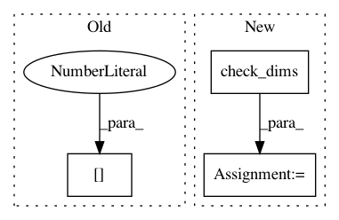

e0fcf7fa255f12bc0d88dcd310716ac44e109495,tslearn/piecewise.py,OneD_SymbolicAggregateApproximation,inverse_transform,#OneD_SymbolicAggregateApproximation#Any#,724
Before Change
self._is_fitted()
X = check_array(X, allow_nd=True)
dims = list(self._X_fit_dims_)
dims[1] //= self.n_segments
X = check_dims(X)
return inv_transform_1d_sax(
X,
After Change
self._is_fitted()
X = check_array(X, allow_nd=True)
X = check_dims(X, X_fit_dims=(None, None, 2 * self._X_fit_dims_[-1]),
check_n_features_only=True)
return inv_transform_1d_sax(
X,
breakpoints_avg_middle_=self.breakpoints_avg_middle_,
breakpoints_slope_middle_=self.breakpoints_slope_middle_,
In pattern: SUPERPATTERN
Frequency: 3
Non-data size: 3
Instances
Project Name: rtavenar/tslearn
Commit Name: e0fcf7fa255f12bc0d88dcd310716ac44e109495
Time: 2020-05-28
Author: romain.tavenard@univ-rennes2.fr
File Name: tslearn/piecewise.py
Class Name: OneD_SymbolicAggregateApproximation
Method Name: inverse_transform
Project Name: rtavenar/tslearn
Commit Name: 8574d53937ee4bc0c657916fd2537af86d1a5db6
Time: 2019-07-13
Author: givdwiel.vandewiele@ugent.be
File Name: tslearn/svm.py
Class Name: TimeSeriesSVC
Method Name: fit
Project Name: rtavenar/tslearn
Commit Name: 8574d53937ee4bc0c657916fd2537af86d1a5db6
Time: 2019-07-13
Author: givdwiel.vandewiele@ugent.be
File Name: tslearn/shapelets.py
Class Name: ShapeletModel
Method Name: fit